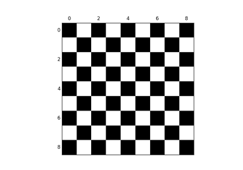

Examples for the scikit-image chapter¶

sphx_glr_packages_scikit-image_auto_examples_plot_check.py
sphx_glr_packages_scikit-image_auto_examples_plot_camera.py
sphx_glr_packages_scikit-image_auto_examples_plot_camera_uint.py
sphx_glr_packages_scikit-image_auto_examples_plot_equalize_hist.py
sphx_glr_packages_scikit-image_auto_examples_plot_sobel.py
sphx_glr_packages_scikit-image_auto_examples_plot_boundaries.py
sphx_glr_packages_scikit-image_auto_examples_plot_threshold.py
sphx_glr_packages_scikit-image_auto_examples_plot_features.py
sphx_glr_packages_scikit-image_auto_examples_plot_labels.py
sphx_glr_packages_scikit-image_auto_examples_plot_filter_coins.py
sphx_glr_packages_scikit-image_auto_examples_plot_segmentations.py